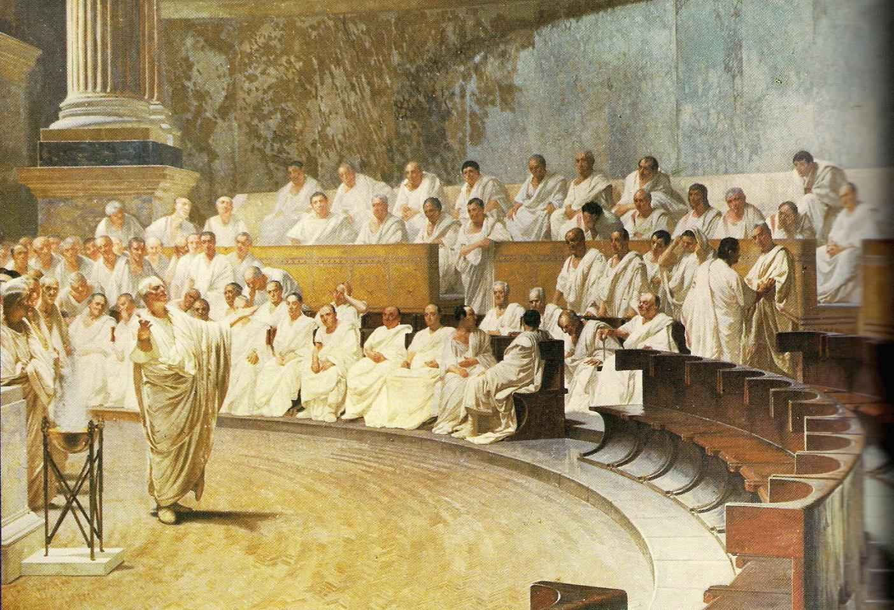
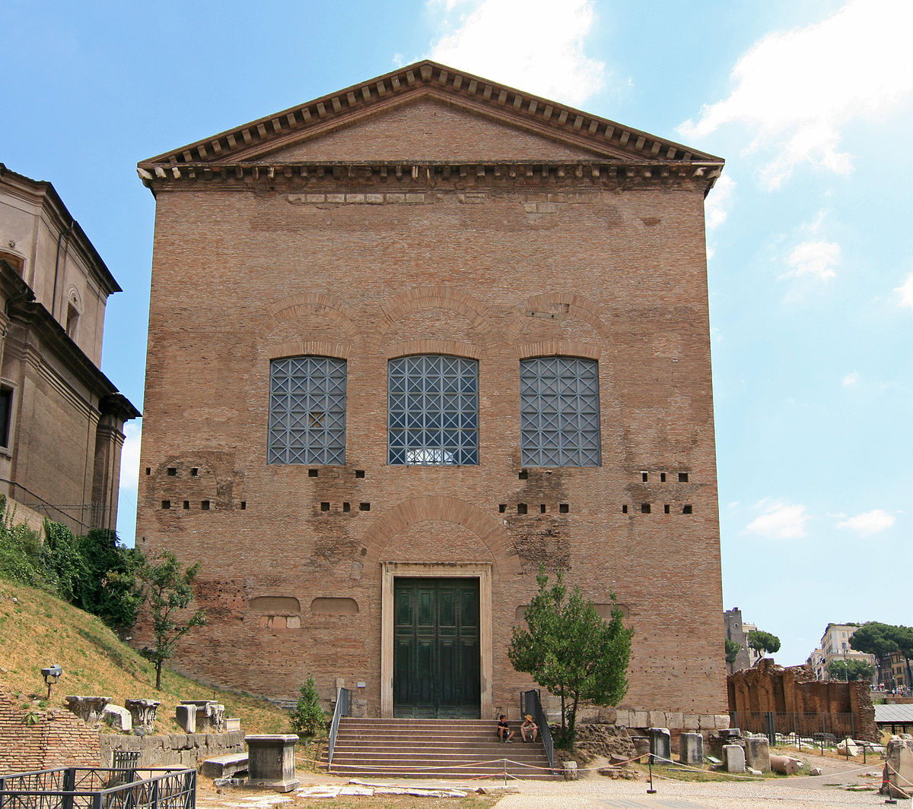

De senaat
Voordat Rome werd geregeerd door keizers, was het een republiek.
Het Romeinse Republiek werd geregeerd door de senaat,
maar wat is een senaat?

rol senaat
Hoewel rome veel keizers heeft gehad,
heeft de romeinse senaat ook een grote rol gespeeld in het besturen van Rome.
Echter was Rome eerst nog een koninkrijk. Hierbij had de koning de macht over Rome.
Onder leiding van Lucius Junius Brutus kwam er een coup d'état.
Nadat het romeinse volk hun koning had afgezet, moest Rome een nieuwe vorm van bestuur vinden.
Rome werd uiteindelijk een senaat en heette vanaf toen het Romeinse Republiek.
In het begin had de senaat niet veel politieke macht maar uiteindelijk lukte het hun om de macht in volle handen te krijgen
Nu de senaat nu over Rome regeerde, waren ze bang hun macht te verliezen.
Toen Julius Ceasar terug naar Rome kwam na zijn overwinningen in zijn campagne in vooral wat nu Frankrijk en Engeland is,
werd hij met 23 dolksteken vermoord door mensen uit de senaat die bang waren hun macht volledig te verliezen.

Een van de moordernaars was ook Ceasar's vriend, Marcus Junius Brutus. Hij maakte echter de fout door Marcus Antonius te laten leven.
Hierdoor ontstond de tweede triumviraat, een samenwerking tussen Marcus Antonius, Octavianus (later augustus) en Lepidus.
Het doel van deze triumviraat was het opsporen en doden van de moordernaas van Julius Ceasar.
Dit lukte hun en Rome werd uiteindelijk verdeeld in 3 delen.
Na een bloederige burgeroorlog tussen Marcus Antinius en Octavianus, werd Rome tot keizerrijk uitgeroepen onder leiding van Augustus (octavianus).
De senaat bleef echter nog macht hebben tot de keizer Caligula aan de macht kwam. Hij zorgde erlangzaam voor dat de keizer volledig over Rome regeerde.
Tegenwoordig
Tegenwoordig bestaat het Romeinse Rijk niet meer, maar de senaat komt echter nog wel terug.
Zo regeerd er in de Verenigde Staten van Amerika een senaat. Dit gaat echter anders dan hoe het in het Romeinse Rijk er aan toe ging.
Je kunt ook nog steeds de ruïnes van het oude senaatgebouw zien, de Curia, dat in Rome staat.
Er waren ook bekende senatoren die je online kunt opzoeken, deze zullen we hier echter niet behandelen.
